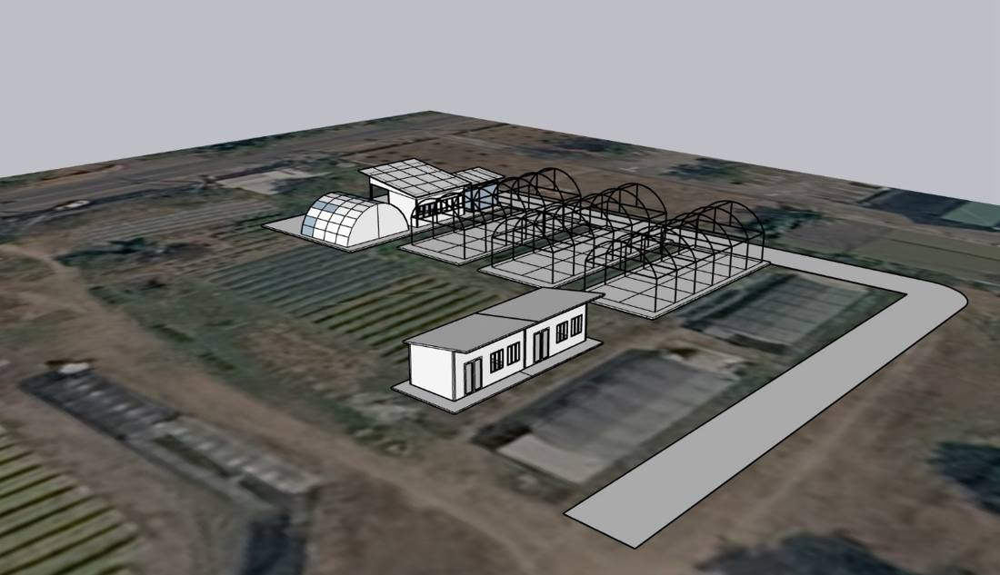
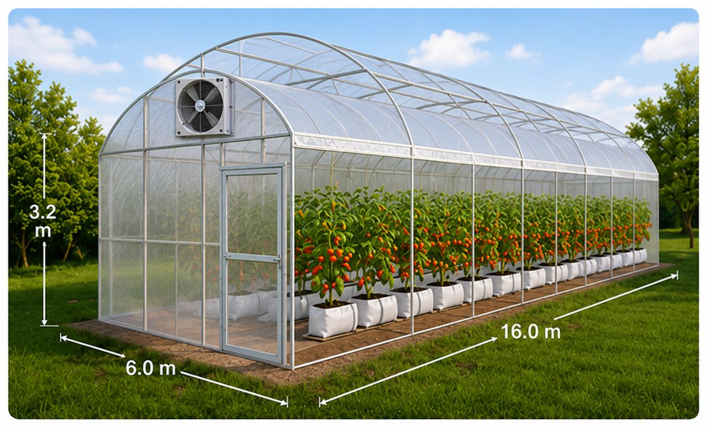
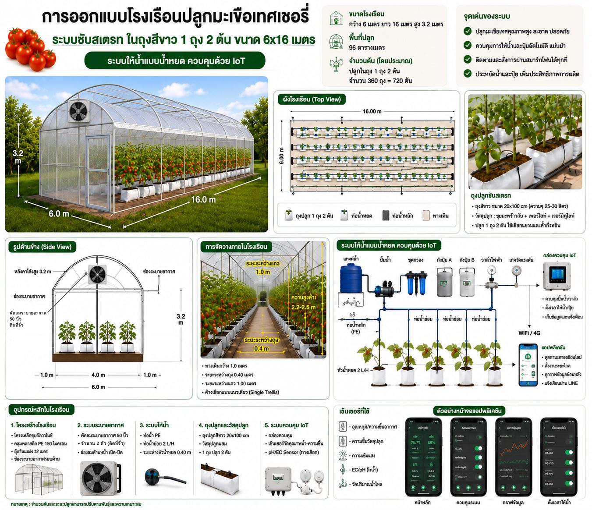

2
พื้นที่และโรงเรือน
พื้นที่ใช้สอยรวม 755 ตร.ม. ประกอบด้วยโรงเรือนปลูก 4 โรง อาคารคัดแยก ห้องเย็น โดมอบแห้ง และอาคารเก็บอุปกรณ์ ผลผลิตเดินทางจากโรงเรือนถึงมือผู้ซื้อภายในพื้นที่เดียว

ผลผลิต 16,000 กก. ต่อปีไปที่ไหน
ทุกกิโลกรัมผ่านอาคารคัดแยกก่อน แล้วแยกไปตามเกรด ความกว้างของแถบเป็นสัดส่วนตามน้ำหนักจริงในแผนการเงิน
สิ่งปลูกสร้างและระบบในพื้นที่
เรียงตามเส้นทางของผลผลิต งบประมาณจากรายการลงทุนในหน้า 6
ภาพจำลองและแบบโรงเรือน

